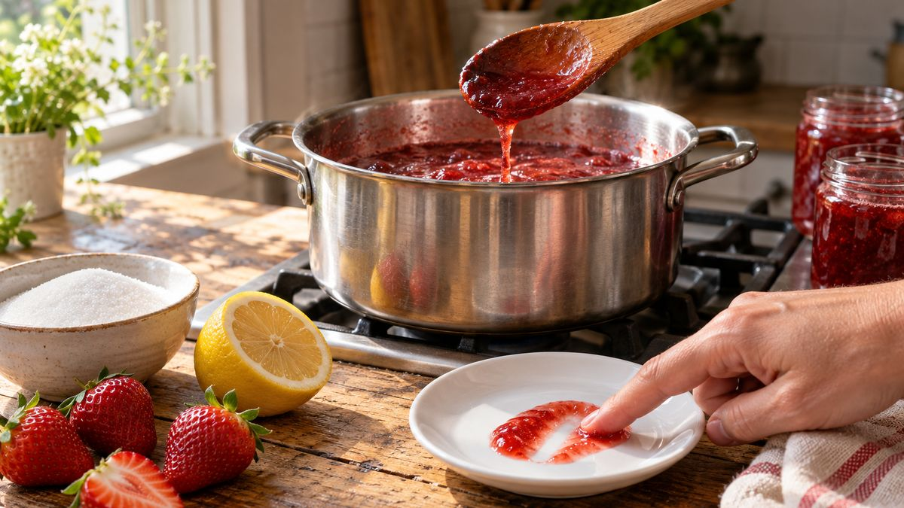

Por que a geleia caseira não engrossa (e como corrigir)

Você seguiu a receita, cozinhou o tempo que mandava, e a geleia esfriou do jeito de calda, não de geleia. Na maioria das vezes o problema não é a receita, é o equilíbrio entre três elementos que formam o ponto: pectina, açúcar e acidez. Falta qualquer um dos três, e o resultado fica mole.
O tripé que faz a geleia engrossar
A pectina (presente na própria fruta) é o que estrutura o gel, mas ela só faz isso em conjunto com açúcar suficiente e acidez suficiente. É a combinação dos três que segura o líquido dentro de uma rede firme. Essa é a base técnica usada até em manual de produção industrial de geleia da Embrapa, só que numa escala bem maior que a de uma cozinha de casa.
Falta de acidez é a causa mais esquecida
A pectina só forma gel dentro de uma faixa de acidez relativamente estreita. Fruta madura sozinha, sem limão, muitas vezes não é ácida o bastante para chegar nessa faixa, mesmo que o sabor pareça equilibrado. É por isso que quase toda receita séria de geleia leva suco de limão, mesmo quando a fruta já é levemente ácida: o limão não é só tempero, ele ativa a pectina.
Pouco açúcar também impede o ponto
Açúcar não é só doçura aqui: ele participa da estrutura do gel, puxando a água e ajudando a pectina a se organizar. Se a geleia ficou rala mesmo com acidez ok, vale reaquecer com um pouco mais de açúcar e cozinhar de novo até engrossar.
Fruta muito madura ou naturalmente pobre em pectina
Fruta muito madura tem menos pectina útil do que fruta um pouco mais firme, porque a pectina se degrada conforme a fruta amadurece. Misturar uma parte da fruta mais firme com a mais madura ajuda a equilibrar isso. Algumas frutas (morango, manga, pêssego) já são naturalmente pobres em pectina por natureza, independente do ponto de maturação. Nesses casos, adicionar maçã (rica em pectina) ou pectina comercial resolve.
Como saber se já chegou no ponto, sem termômetro
Deixe um pires no congelador enquanto a geleia cozinha. Quando achar que está perto do ponto, coloque uma colher de geleia no pires gelado e incline: se escorrer devagar, como um xarope, está perto. Volte o pires pro congelador por mais um minuto e empurre a geleia com a ponta do dedo. Se ela enruga em vez de escorrer lisa, está no ponto.
Se já esfriou e ficou rala
Não precisa descartar. Volte a geleia pra panela, acrescente um pouco mais de açúcar e algumas gotas de limão, e cozinhe de novo até reduzir e testar o ponto outra vez no pires gelado.
Depois que a geleia estiver no ponto certo, o Pote Geleinha 40 ml tem fechamento twist-off e está disponível em várias cores de tampa, prático pra quem faz em lote pequeno pra vender ou pra presentear. Conheça o catálogo completo ou fala com a gente pelo WhatsApp.